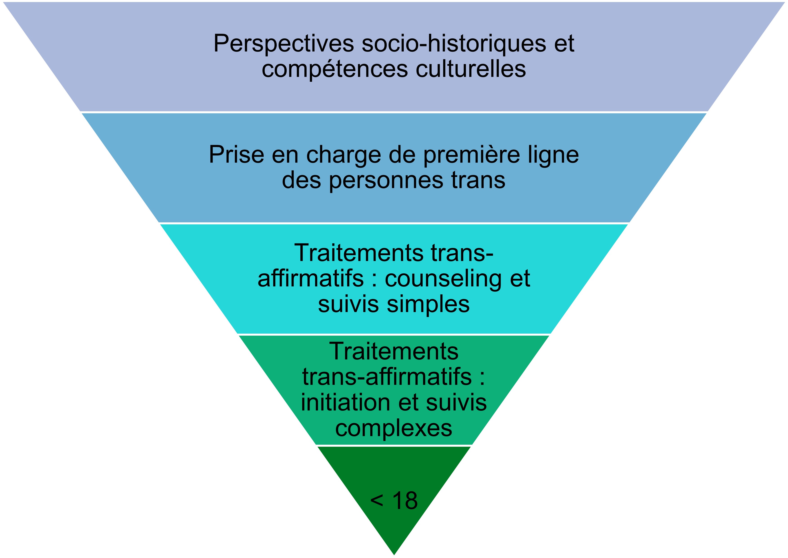

Perspectives croisées sur la médecine des transitions
La santé, du corps au territoire : articuler éthique, sciences et humanités médicales
25/09/2024
Préambule
Présentation personnelle
Alix Fournier
- Masters en sociologie et en études de genre
- Mémoire sur la construction des parcours de transition médicale des hommes trans dans le paysage de soin belge francophone
- Assistant dans la faculté de Philosophie et Lettres ; éthique et humanités médicales
- Projet de thèse en sociologie sur la médecine des transitions de genre
Maxence Ouafik
- Médecin généraliste
- TFE sur l’initiation et le suivi du traitement hormonal d’affirmation de genre en médecine générale
- Collaborateur de la Faculté de Médecine de l’ULiège
- Thèse en cours sur les liens entre normes de masculinité, contexte social, santé mentale et santé physique chez les hommes gays et bis
Des points d’entrée différents mais des constats similaires
Contexte
- Réforme de la loi régulant les changements d’état-civil (2018 ; Service Public Fédéral de Justice (2017))
- Retrait de l’ICD-11 (International Classification of Diseases) en 2019
- Une « réforme du traitement de la question trans » (Jaunait, 2020) : d’une catégorie médicale à une catégorie sociale
- Tension entre auto- et hétéro-définition du sujet (Jaunait, 2020)
Le point d’entrée médical
- Demandes croissantes de personnes souhaitant initier un traitement hormonal sans passer par l’hôpital
- Volonté de présenter un retour d’expérience pour montrer la faisabilité du suivi et encourager le développement de cette pratique en première ligne
Le point d’entrée sociologique
- Comment se déroulent les parcours de transition médicale dans un contexte en profonde transformation ?
Un désert médical
- Manque de médecins (Baleige et al., 2023; Kearns et al., 2021; Lee et al., 2022; T’Sjoen & Motmans, 2022)
- Délais longs et déplacements importants ; voir Figure 1

Figure 1: Mobilité géographique des patients transgenres
La ségrégation des soins
- Modèle de soin centralisé passant par des équipes multidisciplinaires hospitalo-universitaires reconnues par l’INAMI
- Seulement 2 équipes sur l’ensemble du pays (UZ Gent et CHU de Liège) ➡️ saturation rapide des services (T’Sjoen & Motmans, 2022)
- Soins organisés comme ultra-spécialisés ➡️ exceptionnalisation des parcours et corps trans
Note
[J]’ai vraiment galéré à trouver une endocrinologue qui veuille bien me prendre. […] Et en fait, j’ai appelé, je pense, sans exagération, une vingtaine d’endocrinologues, et à chaque fois, je précisais pourquoi je venais, et ils m’ont tous refusé […] en disant : « Non, moi je ne fais pas ça ».
[…][l’hôpital] a été vraiment violent dans la réponse. […] par mail, on m’a dit : « Non, écoutez, quelqu’un est déjà venu dans votre cas et on lui a dit directement de rentrer chez lui, parce qu’on fait pas ça chez nous ».
Note
Elle [l’endocrinologue] ma dit : « Ah d’accord, mais vous savez, ça existe les équipes spécialisées ». Elle voulait direct refiler la patate chaude. J’ai dit : « Oui, je sais très bien, mais écoutez, j’habite à […], je travaille, je peux pas tout le temps me rendre sur Liège, donc c’était plus simple de vous voir ». « Ah mais parce que moi, vraiment, je ne fais pas ça ». J’ai dû forcer un petit peu le trait parce qu’elle voulait pas me prendre en charge en fait.
J’avais l’impression d’avoir genre une maladie rare où on pouvait juste me référer à un centre qui connaissait. »
Le confinement à la troisième ligne
- En temps normal, l’hospital universitaire gère 0,1% des besoins de santé d’une population
- Pour la population trans, ce morceau ultra-spécialisé de l’offre de soin est vu comme le défaut

Contexte socio-historique de l’organisation des soins trans
Apports des sciences humaines et sociales
- L’histoire de la médecine des transitions de genre est une histoire de multiples négociations
- La médecine s’est constituée comme une institution de contrôle des corps et population trans, dans un enchevêtrement entre normes sociales et médicales.
Une histoire de négociations multiples
Batailles épistémiques entre arènes disciplinaires
Endocrinologie/sexologie
Désordre biologique à traiter médico-chirurgicalement.
Psychiatrie
Trouble grave de la personnalité à traiter par psychothérapie.
Comment résoudre le trouble ?
Faut-il traiter les corps ou les âmes ?
➡️ Un standard de soin développé et disséminé comme compromis entre des approches pathologisantes divergentes
La médecine comme institution de contrôle des corps
- Diagnostic psychiatrique reposant sur la conformité aux normes de sexualité et de genre
- Mise en conformité des corps par les hormones et la chirurgie
- Contrôle renforcé par le champ juridique
- Parcours-type ne correspondant pas aux réalités des personnes trans
Que retenir ?
- L’offre médicale actuelle ne correspond pas à la demande, tant dans sa quantité que dans sa qualité
- Plus qu’un simple manque de médecins formés, il existe un contexte socio-historique dont l’héritage continue à se faire ressentir, tant dans l’organisation des soins que dans les représentations et pratiques médicales
- Etau entre l’héritage du modèle et les mutations juridiques et sociales
- Toute velléité de changement nécessite donc de prendre en compte ce contexte et son impact sur les représentations, attitudes et pratiques
Que faire de ces constats ?
Projets en cours
- Projet de thèse sur la médecine des transitions de genre
- Formation à destination des médecins généralistes
Projet de thèse
Point de départ
Une relation de soin atypique (Ashley, 2022; Clochec, 2023)
Double transformation : (1) redéfinition des rôles au sein de la relation entre patient·es et soignant·es ; (Ashley, 2022; Bienaimé, 2018; Clochec, 2023) ; (2) « une réforme de l’organisation des systèmes de soin » se traduisant par une diversification des modalités de parcours ainsi que des disciplines et espaces de soin qui y sont impliqués (Baleige et al., 2023)
La médecine trans comme terrain incertain (Shuster, 2021)
Dans ce contexte en profonde transformation, comment les négociations patient·es-soignant·es autour des parcours de transition se déroulent-elles ?
Étudier la transition médicale…
… comme un processus d’interaction et de négociation…
… par analyse double qui s’intéresse (1) aux personnes réalisant un parcours de transition médicale et (2) aux professionnel·les de santé qui y sont impliqué·es…
…au sein de différentes infrastructures médicales.
➡️ Répondre à une double absence dans la littérature
Méthodologie
Un terrain en FWB
Une triangulation méthodologique
- des entretiens semi-structurés avec des prestataires de soin ;
- des entretiens semi-structurés avec des personnes ayant initié un parcours de transition médicale ;
- des observations dans différents espaces de soin ;
- observation de conférences scientifiques ;
- analyse d’un corpus de documents.
La formation Comp·a·s
Compétences avancées en santé trans
Philosophie de la formation
- Ne pas inculquer des règles strictes mais donner des clés de compréhension
- Nécessité d’une approche transdisciplinaire
- Place centrale de l’autonomie
Objectifs de la formation
- Multiplier les espaces de soin en formant davantage de médecins
- Cibler les médecins généralistes pour ramener les soins trans en première ligne
- Modifier la perception, les attitudes et les pratiques des médecins ; développer une éthique de soin trans-affirmative
Contenu de la formation
Figure 3: Structure de la formation
Bibliographie
Titre de la présentation